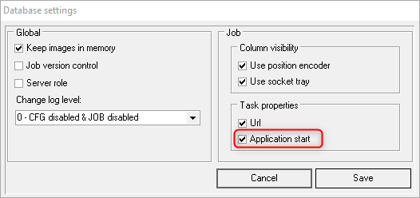
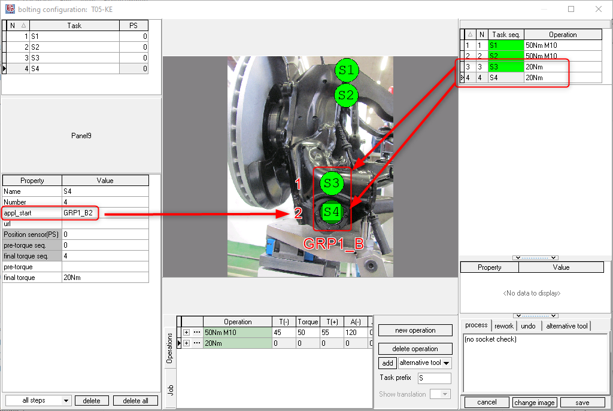

KE350 Multi-spindle tightening system
Info
This page describes the specifics for configuring the Rexroth KE350 multi-spindle tightening system with OGS, for general information about the OGS OpenProtocol configuration, see OpenProtocol Tools.
Overview
System350 based tools mainly fall into two categories:
- Single spindle tools and ErgoSpin tools used in spindle mode
- Multi-spindle tools
- ErgoSpin tools (used in ErgoSpin hand-tool mode) - these are not considered here, as typically a CS351 controller is used in this case, please see CS351 OpenProtocol.
Spindle tools (and ErgoSpin in spindle mode) use externally connected start switches (for start CW, start CCW). All tools are controlled over OpenProtocol using the "Ford OpenProtocol" protocol type and are started in application mode (using fasterning operation FO 1).
Additional notes:
- Check the PSet start step parameter setting "play with start switch"
- Check the
CHANNEL_<tool>_CCW_ACKsetting for the tool instation.ini. - See below on how to configure the PLC assignment table for
FO 1 SSWLockand the externalCCWSelsignals
For the CHANNEL_<tool>_CCW_ACK setting, the following is recommended:
- If you use a spindle tool with seperately wired CW/CCW and start signals, then set
CHANNEL_<tool>_CCW_ACK=1and connect the direction switch output to theCCWSel-Signal - If you use a spindle tool with only CW start and CCW start signals, then set
CHANNEL_<tool>_CCW_ACK=0, but make sure to configure theFO 1 CCWLocksignal - Follow the plc signal assignment setup and check the configuration for loosen below.
Note
To reliably prevent loosen it is recommended to use a seperate direction switch connected to the CCWSel signal and also connect the FO 1 CCWLock-Signal (see below).
OpenProtocol configuration
Overview
OGS uses the KE350 Rexroth OP-Ford R1.0 protocol version. This maps the
OpenProtool commands to the application start (fastening operation) FO 1 signals, so multiple spindles can work in a synchronized way and report the spindle groups result status.
{kind=link}
KE350 OpenProtocol settings
PLC signal assignment for OpenProtocol
The PLC signals OGS uses to control the tool are as follows:
| Inputs | Signal | Assignment | Comments | |
| OP0.1-OP0.7 | FO 1 Seq0-7 | Mandatory | Application number, must be assigned | |
| OP1.0 | FO 1 Enabled | Optional | True, if the application was enabled by OGS, typically connected to the yellow LED on the tool handle (use internal signal routing KE AppIn 0 → B1:KE AppOut 0 for IM24V output) |
|
| OP1.1-3.0 | Custom I/O | See below | Signals controlled by OGS | |
| OP1.1 | (unused) | |||
| OP1.2 | FO 1 CCWLock | Optional | The signal is set by OGS whenever a normal tightening process is expected to run - it is released, if loosening/rework is active instead. If assigned to FO 1 CCWLock, this effectively prevents a CCW-Start if OGS expectes a CW-Start (prevent unauthorized loosen). Note, that a user with right lossen by CCW always is allowed to loosen, i.e. this signal is then always set to false! |
|
| OP1.3-3.0 | (unused) | |||
| OP3.1-5.0 | (unused) | |||
| OP5.1 | FO 1 Disable | Mandatory | This signal enables/disables the tool | |
| OP5.2-5.7 | (unused) | |||
The PLC signals OGS receives from the tool are as follows:
| Outputs | Signal | Assignment | Comments | |
| OP0.1-OP0.7 | (unused) | Not used for KE application mode | ||
| OP1.0-2.7 | Custom I/O | See below | Signals sent to OGS | |
| OP1.0 | CCWSel | Optional | If set, indicates, that the start switch on the tool is set to CCW. Typically connected to the external start switch direction selector on the tool handle (use internal signal routing KE AppOut 1 ← B1:KE AppIn 1 for IM24V output |
|
| OP1.1-1.4 | (unused) | |||
| OP1.5 | FC NF | Mandatory | If false, OGS shows a KE system error message | |
| OP1.6-2.7 | (unused) | |||
| OP3.0-5.7 | (unused) | |||
The following screenshot shows a typical PLC assignment table setup for the OpenProtocol signals:
{kind=link}
Please note, that Input OP1.0 (FO 1 Enabled) is connected to the KE AppIn 0 signal and the Output OP1.0 (CCWSel) to the KE AppOut 1 signal. These are then bridged (KE AppIn X and KE AppOut X are internally bridged) to the IM24V I/O-Card in slot B1:
{kind=link}
This basically then implements the following (Signals FO 1 CW and FO 1 CCW also connected):
- The tool can be started clockwise with im24V digital input 0.0
- The tool can be started counter-clockwise with im24V digital input 0.1
- The direction selection switch is connected to im24V digital input 0.2 → routed to
CCWSelatOutput OP1.0, so OGS can read the state of the direction switch (don't get confused with the naming output vs. input) - The tool enable state is connected to the handles yellow LED at the im24V digital output 0.0
- CCW start is locked by OGS to prevent invalid loosen without proper rights (using the
FO 1 CCWLocksignal)
Note
Make sure to assign and set the FC EN signal (should be fixed to 1), else the tightening cell will not be enabled and thightening will not work (see above, FC EN set to im24V B1 1.7).
Note
Not shown in the above signal table is the NOK acknowledge functionality. If there is no CCWSel signal available,
it is highly recommended to connect the FO 1 NokAc signal to an external NOK acknowledge button. This will
automatically disable the tool after a NOK rundown and requires pushing the NOK acknowledge button to
re-enable the tool for the next run. This basically makes the operator aware of an NOK result and prevents false
position tightening/loosening.
OGS configuration
Overview
Configuring OGS for use with KE350 application start (fastening operation) requires the following:
- Configure the tool connection parameters in station.ini
- Database setup, workflow and tool configuration in the heOpCfg workflow editor
station.ini configuration
Station.ini configuration uses the standard parameters of the OpenProtocol driver (see OpenProtocol Tools).
To work with the Rexroth OP-Ford R1.0 protocol in the KE350, the channel TYPE parameter must be set to KE350.
Here is a sample configuration for tool/channel 1:
[OPENPROTO]
# Channel/Tool 1 parameters
CHANNEL_01=10.10.2.163
CHANNEL_01_PORT=4545
CHANNEL_01_TYPE=KE350
CHANNEL_01_CCW_ACK=0
CHANNEL_01_CHECK_TIME_ENABLED=1
CHANNEL_01_CURVE_REQUEST=1
Tool configuration
To add a KE350 tool, add it as any other tool to the tool configuration and define the default loosen program:
{kind=link}
Multi-Spindle configuration
For KE350, OGS uses application start (fastening operations), where a single start command can start a group of spindles.
If more than a single spindle is started, OGS needs to know which bolt is mapped to which spindle. This is done by assigning
a group (this defines which bolts belong to a single application start) and a sequence number (which actually maps the
bolt to the spindle). The Both parameters are set in the appl_start task parameter.
The appl_start task parameter can be enabled in the workflow editor in database --> settings as follows (check the "Application start" parameter):

{kind=link}
The appl_start parameter is then found in the task properties:

{kind=link}
The screenshot also shows how the spindles of the fastening operation is mapped: the appl_start property consists of the following two parts:
appl_start = <group><sequence>
where
<group>is a unique name to group the spindles of a single rundown. All bolts of a spindle group started through a single fastening operation must have the same<group>name.<sequence>is the sequential number of the spindle as configured in the BS350 application.
The following screenshot shows a sample mapping:
{kind=link}
Here application number 11 (fastening operation) is defined in BS350 and selected on OGS (operation "20Nm"). The application consists of two bolts:
- Sequence #1: Name="Pos1", Channel 4.3, Program 5
- Sequence #2: Name="Pos2", Channel 4.4, Program 5
The fastening operation in OGS is named GRP1_B (the <group> name)
Note
If a fastening operation is used multiple times in an OGS job, then a unique group name must be used for each fastening operation.
If e.g. 3 times the dual-spindle application from the screenshot above shall be used, then the following six tasks can be configured:
| Application start | OGS Task | appl_start | Group | Sequence |
| FO start #1 | S1 | GRP1_A1 | GRP1_A | 1 |
| S2 | GRP1_A2 | 2 | ||
| FO start #2 | S3 | GRP1_B1 | GRP1_B | 1 |
| S4 | GRP1_B2 | 2 | ||
| FO start #3 | S5 | GRP1_C1 | GRP1_C | 1 |
| S6 | GRP1_C2 | 2 |
Loosen behaviour
Even though there are more option (see the general discussion in OpenProtocol Tools - Loosen modes), the following section shows the common and recommended configurations.
CCWSel used
This is the preferred configuration, as the user-experience is most intuitive. Unfortunately the most often used start grip handles do not provide the neccessary signals, as a start grip handle with two outputs as follows is needed:
- CW: start signal for tightening
- CCWSel: state of the direction switch, true, if CCW selected
With this configuration, the following settings are recommended:
CHANNEL_<tool>_CCW_ACK= 1- Connect
OP1.1 InputtoFO 1 CCWLock - Connect
OP1.0 Outputto the CCWSel signal of the handle (using AppIn/AppOut signals to bridge to IM24V/fieldbus) - Usually
FO 1 NokAckis not connected
This forces the operator to switch the CW/CCW selection switch to CCW every time a loosen process is needed. Please note, that only the custom loosen program number can be used for loosen, as the CCW start signal is not assigned.
No CCWSel, but NokAck
As most start handles only provide seperate start CW and start CCW signals (without a signal for indicating the CW/CCW position), CCWSel often cannot be used. To ensure sequence interlock between tightening and loosening,
the FO 1 NokAck signal is connected to an external pushbutton (typically the start handle provides this). In this case, the following signals are typically used:
- CW: start signal for tightening
- CCW: start signal for loosening
- NOKAck: A normally closed (high) signal to acknowledge NOK, re-enable the tool
With this configuration, the following settings are recommended:
CHANNEL_<tool>_CCW_ACK= 0- Connect
OP1.1 InputtoFO 1 CCWLock - Connect
FO 1 NokAckto the external NokAck pushbutton
This blocks the tool after an NOK until the NokAck button is pressed.
The FO 1 CCWLock signal ensures that loosen is blocked, if it is
not allowed.
Note that loosening now uses the given application number set in the tool configuration and uses the CW start. If applications with a different number of spindles are used, then an explicit rework operation must be defined, matching the tightening operation spindle set.
No CCWSel, no NokAck
See above, but interlock is now not possible. After a NOK rundown OGS immediately selects the loosen operation, which is started with the next start (CW) signal...
Hints
Start grip handles
Jäger Handling provides start
a large range of start grip handles. Most e-Handle
models except the SD-series provide a seperate start signal as well as a CWSel signal with the position
of the direction selection ring. All e-Handle
models provide LEDs for enable, ok and nok results, some models also provide additional buttons for custom use
(e.g. NOK acknowledge).

When choosing a handle, check the following:
- Models EHHRRSD and EHARRSD do not provide the CCWSel signal
- Models without the SD-extension provide seperate start and CCWSel signals, e.g. EHHRR
Possible combinations
Please see the following document for the behaviour of the options depending on the selected configuration: OGS Rexroth EC tools configuration behaviour for OGS.